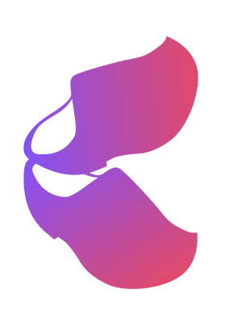

 Klogging
Easy and powerful logging from Kotlin with coroutine support
Easily create structured logs
Send log events as structured parcels of data, not simply message strings.
When you use a message template in logging code: Klogging creates a structured log event:
Klogging creates a structured log event:
Log information about execution scope
You can store information in Kotlin coroutine scopes and Klogging includes it in log events. There is no need to manage removal of information from scopes because Kotlin coroutines take care of that.
Put some information into coroutine scope: Klogging includes the information in the log event:
Klogging includes the information in the log event:
High-resolution timestamps
Be confident about the order in which log events from a host were produced. Klogging uses the finest resolution available: at least microsecond, and down to nanosecond if available.
Avoid the situation where you need to know the order of log events but can’t tell from the log aggregation: